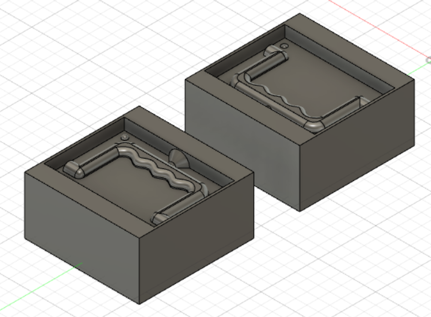
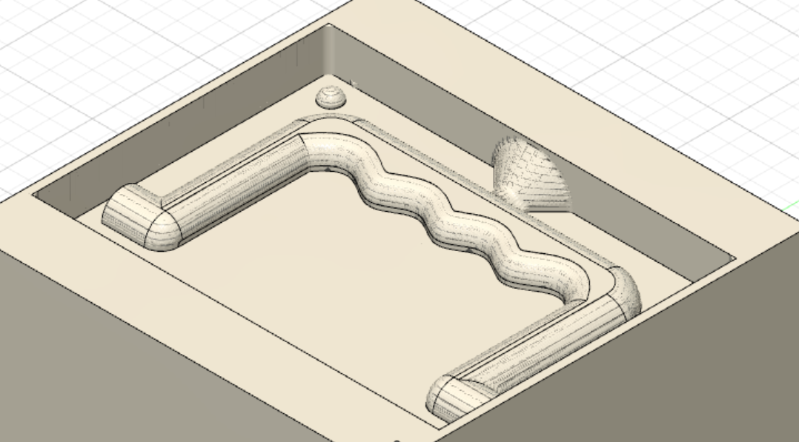

Final project
Project 6
Project Description
For this project we should make a suggestion for a final project, for which we should integrate project 4 and project 5. That is, the "milling something big" and "molding and casting" projects should add up to one related product/object that will be our final project. These three projects: milling something big, molding and casting, and the final project, are group projects. Inside of the group we should divide responsibilities and use project management to orginize when things are done. We should create a one page summary on how we made the project and a license for it. In addition to that a 2 minute video of the final project should be made.
Final project
This group consists of two group members: Halldór and Valgeir. This webpage was made by both members and it contains a short description of our final project.
Before any decisons on project management and how we would organize tasks for each member, we decided to do some brainstorming on our own. We began searching for ideas who would suit well for this project, that is it should include both milling something big made out of wood and an object made by molding and casting. Around March 20th we found a good project idea: milled wooden breifcase with a handle made by molding and casting.
Breifcase
The idea is a wooden breifcase with a handle that can be made by molding and casting. We decided on a breifcase that has hinges to connect both lids and locks to close the case.
1. Project management
A simple project management plan was made:
- Halldór will oversee all design and documentation for project 4.
- Valgeir will oversee all design and documentation for project 5.
- Both memebers will take active part in production of both parts and also in project 6.
The time schedule for the above tasks are the following:
- Halldór will finish his design and prepare toolpaths before our Fablab appointment 7th April where we will finish the milling of the breifcase.
- Valgeir will finish his design and try to prepare toolpaths before our Fablab appointment 7th April. If everything is ready and time allows we will maybe start milling the mold. If he needs help with design or toolpaths we will get help at the same Fablab appointment. Then a suitable Fablab appointment will be found to finish project 5.
- Project 6 will be done right before the deadline of 25th April.
2. Milling the breifcase
This part of the final project was made by Halldór.
First a 3D model of the breifcase was created in Fusion 360. The model is parametric, so it is easy to change the design if the height-width ratio of the breifcase is undesirable.

To add a little bit extra to the breifcase we decided to carve a gorilla face on the front and the back. In order to mill the breifcase we needed to create toolpaths. VCarve was used to generate both the toolpaths for the gorilla carving and the profile outlines.
The breifcase was milled with the Shopbot machine at Fablab, using a 60° V-bit for the carving and a 6mm flat-end-bit for the profiles.
At last the breifcase was assembled by using wood glue. Because we couldn't finish the breifcase handle no hinges or locks where added. Here is the assembled breifcase:
For a more detailed description on how to mill the breifcase you can check this webpage.
3. Breifcase handle
This part of the final project was made by Valgeir.
To begin with a simple model of a breifcase handle was made. Due to size contraints of the wax stock (100x100x50mm) that we had access to this handle is quite small, it would probably fit well into hands of childrens.
Next two positive molds where made. The reason for two molds is, despite of symmetry, to make keys that make the two sides align. To make it possible to pour resin or other suitable material that the mold will be made of a hole is also added.
Before you would mill the two positive molds toolpaths will have to be created and the G-code, so the milling machine knows what to do. A computer aided outcome of the milling can be seen below:

We couldn't go further with this project because of time contraints. But next steps would be to mill the wax stock to create the two positive molds, then silicone would be poured to create two negatives of the handle, finally resin or other suitable material would be poured through the whole on the double negative to create the actual handle. The handle would then have been mounted to the breifcase as described in project 4.
For a more detailed description on how to make the breifcase handle you can check this webpage.
4. Product
Due to the fact that we did not finish making the handle, the end product was never assembled. That is, no hinges or locks where bought and put on the breifcase becuase we didn't see the point if there was no handle. Here are two photos which show what it maybe could have looked like:


5. License
Wooden breifcase by Halldór Gauti Pétursson and Valgeir Einarsson is licensed under CC BY-NC 4.0


Production video
Afterthoughts
It would have been cool to finish the product to get to see it as a whole, but it was also nice to skip the manufacturing of the handle because of time contraints.
Workload
- unknown hours: Deciding on final project
- 1 hour: Project management
- 19 hours: Whole of project 4
- 17 hours: Whole of project 5
- 2 hours: Creating this webpage and creating licence
- 3 hour: Creating video
- 42 hours: Total
Design files
To access the design files for milling the breifcase go to this webpage, and for the design files of the molding and casting of the breifcase handle go to this webpage.
Search engine key words
project management - intellectual property licence - creative commons